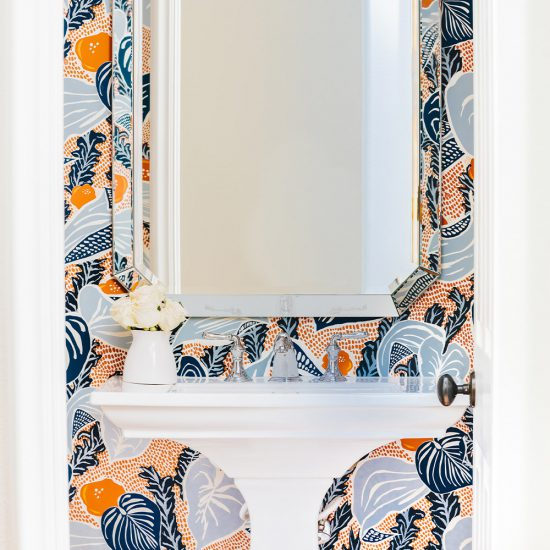

Transform your Encino home with JAC Interiors' expert interior design services. Creating beautiful spaces that reflect the unique character of Encino.
Encino isn’t just one of LA’s most desirable neighborhoods—it’s a lifestyle. Tree-lined streets, mid-century ranch homes, sweeping canyon views, and a culture that’s both relaxed and quietly luxe... this little pocket of the San Fernando Valley holds incredible opportunity when it comes to creating a curated, highly personal living space. At JAC Interiors, we frequently find ourselves in Encino designing spaces that reflect its elevated suburban sophistication with easy California ease.
Whether we’re infusing warmth into a Mid-Century Modern revival off Hayvenhurst, reimagining a Spanish-style villa near Ventura Boulevard, or remodeling a contemporary hillside home overlooking the Sepulveda Basin, our goal is always the same—bring our clients’ stories to life with high-style, livable design. Our Los Angeles design studio is based just minutes away in West LA, and we’ve come to know Encino as one of our most inspiring neighborhoods to work in. The lighting here is beautiful, the lots are sprawling, and the architectural canvas is rich with potential.
JAC Interiors is a boutique, woman-owned design firm founded in 2012 by Andrea Putman and Timothy Mersman—both Otis-trained designers with over a decade of collaborative design-build experience rooted in LA’s diverse architectural landscape. Our full-service studio has been transforming interiors across the city, from Encino to Beverly Hills and beyond, delivering both renovation-ready design concepts and space-maximizing build solutions.
We specialize in full-service interior design in Encino and the greater LA area, including:
Looking for something ultra-custom? Our bespoke solutions include fireplace mantels designed specifically for open-concept Encino great rooms, or smart-storage built-ins handcrafted for family homes off Balboa.
View all ourdesign services →
We don’t just work in Encino—we get Encino.
While the area embraces a variety of architectural styles—from updated Spanish homes east of White Oak to newer construction along Royal Oaks—we always begin by honoring the architectural context, and then designing for how our clients actually live. We're known for creating layered but low-key luxury that makes everyday life feel elevated, not staged.
That canyon breeze and sunshine-rich Valley daylight? We design to maximize them. Whether that means reconfiguring glass doors between the kitchen and the backyard barbecue zone, or creating a seamless flow from living room to loggia with complementary materials, we make sure your home connects to California’s natural beauty.
From vintage homes built in the post-war boom to newer builds that need a designer’s eye to feel more personal, JAC Interiors brings both aesthetic vision and design-build capability. We manage the process end-to-end—collaborating with your GC or bringing in our own trusted team.
Our local insider connections mean you get access to stunning finishes, unique pieces, and top-tier craftsmanship. Think handmade tile from Heath Ceramics, reclaimed wood beams sourced for that authentic canyon home vibe, or high-end appliances from Ferguson’s near Sepulveda.
Designing a home in Encino means tapping into one of LA's richest design landscapes. For artisan plumbing fixtures and bath elements, we collaborate often with Ferguson in Woodland Hills—their showroom is stacked with luxury selections perfect for Encino’s blend of classic and contemporary.
Need something sleek for a hillside build? Snyder Diamond in Van Nuys is a go-to for modern kitchen finishes, and their lighting selection is always a hit with our clients.
For curated furniture, the West Hollywood Design District is steps away, but we also love styling projects with L.A.-made finds from Croft House or reupholstered vintage gems from MidcenturyLA, especially when we’re designing with those charming Valley ranch houses in mind.
Want to see how it all comes together? Check out ourProjects page →
Our projects often take us throughout the most prestigious pockets of Encino, from the classic estates along Encino Hills Drive to expansive contemporary builds closer to Mulholland.
You’ll find JAC Interiors in:
Wherever you are, we're here to translate your lifestyle into a design story that’s uniquely you.
Explore ourCities We Serve hub
For a community like Encino, known for its spacious, family-centric homes and a lifestyle that balances quiet residential living with easy access to the city, JAC Interiors draws inspiration from projects that blend high-end design with a focus on family and entertainment. Our portfolio showcases a mastery of transforming residences into bespoke sanctuaries, a key element of Encino interior design.
Our comprehensive design approach, from materials selection to bespoke furnishings, is why JAC Interiors is the trusted partner for transforming homes throughout the greater Los Angeles area, including the beautiful community of Encino.
Whether you're dreaming of a kitchen ready for Valley family dinners or your own deeply relaxing ensuite oasis, JAC Interiors is ready to help you bring it to life. We’d love to learn more about your project, what inspires you, and how we can make your home feel like the most beautiful version of itself.
Book your free consultation by filling out the form below or by giving us a ring.
JAC Interiors – where inspired California living begins.
Contact JAC Interiors today for a consultation. Let's create a beautiful space you'll love.
Get in Touch